Case Study
Arka Glow
Self-Initiated D2C Digital Marketing Project
Arka Glow is a self-initiated digital marketing portfolio project where I planned and executed an end-to-end marketing strategy for a mock D2C skincare brand. The project included website development, SEO, Google Performance Max, Google Analytics 4, Google Tag Manager, Instagram content planning and campaign analysis using a real advertising budget.
Project Overview
The goal of this project was to simulate the work of a Digital Marketing Associate by planning, building and promoting a D2C skincare brand using real digital marketing tools.
🎯 Objective
Build and market a mock D2C skincare brand while gaining practical experience in SEO, Google Ads, Analytics and Content Marketing.
🌐 Landing Page
Designed and developed a responsive landing page using HTML, CSS and GitHub Pages.
🔍 SEO
Conducted keyword research, optimized website content and wrote SEO blog articles.
📈 Google Ads
Planned, launched and optimized a Google Performance Max campaign using a real advertising budget.
📊 Analytics
Implemented Google Analytics 4 and Google Tag Manager to monitor campaign performance and user behaviour.
📱 Social Media
Planned Instagram content, created creatives and developed a content marketing strategy for the brand.
Landing Page Design & Development
I designed and developed a responsive landing page for Arka Glow to simulate the customer journey of a D2C skincare brand. The page was created using HTML and CSS and focused on user experience, clear product messaging, and conversion-oriented design.
- ✓ Designed a fully responsive landing page
- ✓ Created a clear product-focused hero section
- ✓ Added product benefits, ingredients and FAQs
- ✓ Included testimonials and social proof
- ✓ Added multiple call-to-action sections
- ✓ Optimized layout for readability and conversions
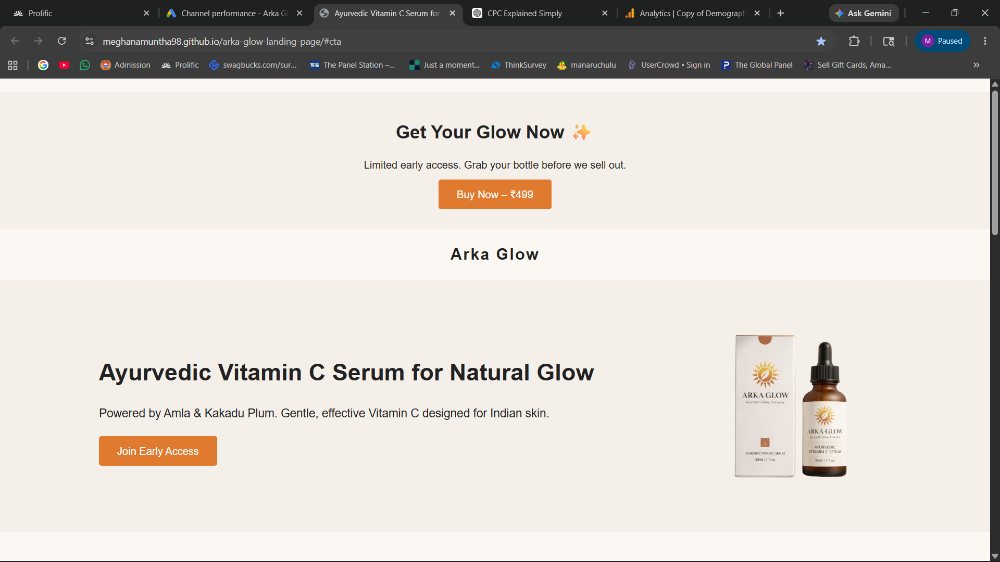
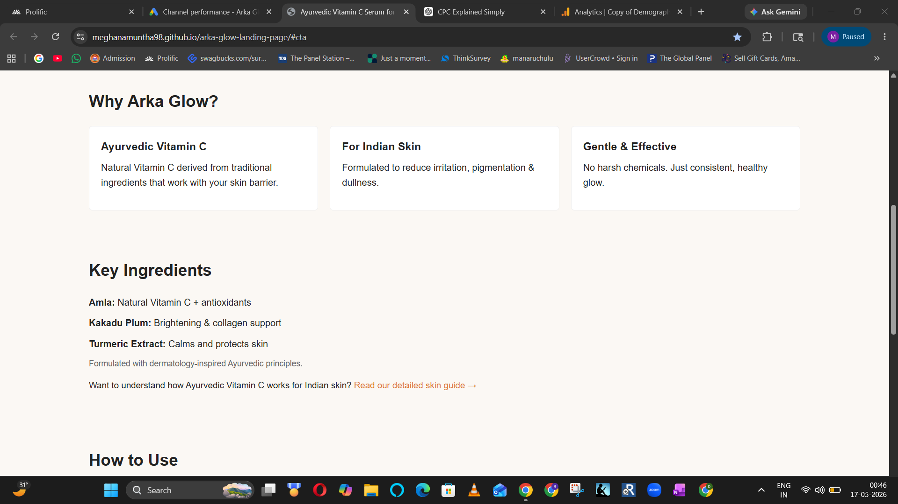
Instagram Content Marketing
As part of the Arka Glow digital marketing strategy, I developed an Instagram presence to build brand awareness, educate potential customers, and establish a consistent visual identity. The content strategy was designed to complement the landing page, SEO efforts, and Google Performance Max campaign while positioning Arka Glow as an Ayurvedic Vitamin C serum for Indian skin.
Platform
Content Published
10 Instagram Posts
Primary Objective
Brand Awareness & Customer Education
Responsibilities
Content Strategy, Visual Design & Copywriting
Marketing Strategy
Before creating content, I developed a simple content marketing strategy to ensure every post supported the overall business objective. The strategy focused on educating potential customers, building trust and positioning Arka Glow as a gentle Ayurvedic Vitamin C serum for Indian skin.
Challenge
The skincare market is highly competitive, with many Vitamin C serums making similar claims. The challenge was to differentiate Arka Glow by highlighting its Ayurvedic ingredients and suitability for Indian skin.
Objective
Build brand awareness, educate potential customers, strengthen product positioning and encourage visitors to explore the landing page.
Target Audience
Women and men aged 20–40 interested in skincare, pigmentation, natural beauty products and Ayurvedic wellness.
Content Pillars
Ingredient Education • Skin Concerns • Product Benefits • Skincare Tips • Brand Awareness
Content Execution
Based on the content strategy, I designed and published branded Instagram content to educate potential customers, strengthen brand identity and support the overall marketing campaign. The content maintained a consistent visual style while communicating product benefits, skincare education and brand positioning.
Instagram Profile
Designed a branded Instagram profile with bio, profile image and landing page link.
Feed Design
Created a visually consistent feed using brand colours, typography and skincare-focused graphics.
Content Creation
Published 10 Instagram posts focused on skincare education, product benefits and brand awareness.
Copywriting
Wrote captions that matched the brand voice and encouraged audience engagement.
Content Showcase
To establish a consistent brand identity, I created and published Instagram content focused on skincare education, product awareness and visual storytelling. The content was designed to complement the landing page, SEO content and paid advertising campaign.
View the complete Instagram content created for the Arka Glow campaign.
View Instagram Showcase →Content Performance & Reflection
Although this was a portfolio project rather than a commercial product launch, creating the Instagram content helped me understand how social media supports overall digital marketing. The content was designed to educate users, maintain consistent branding and complement both the landing page and paid advertising campaign.
Strengths
- Consistent visual branding across all posts.
- Educational content supporting product positioning.
- Clear alignment with the landing page and SEO strategy.
- Content created to build awareness before product launch.
Future Improvements
- Create short-form educational Reels.
- Publish content more consistently using a content calendar.
- Add customer testimonials and user-generated content.
- Experiment with interactive Stories and polls.
SEO Strategy
To improve the organic visibility of Arka Glow, I developed an SEO strategy focused on user search intent and topical relevance. The strategy included keyword planning, content organization, on-page optimization and internal linking to support both the landing page and educational blog content.
Keyword Research & Mapping
I researched primary and supporting keywords related to Ayurvedic Vitamin C and Indian skincare, then mapped them to the landing page and blog articles based on search intent. This helped ensure each page targeted a specific topic while supporting the overall SEO strategy.
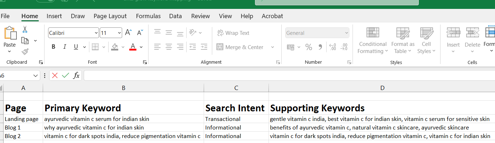
SEO Activities
- ✅ Keyword Research
- ✅ Keyword Mapping
- ✅ Search Intent Analysis
- ✅ Landing Page Optimization
- ✅ SEO Blog Writing
- ✅ Internal Linking
- ✅ Heading Structure (H1–H3)
- ✅ Content Optimization
SEO Blog Articles
To support informational search intent, I created two educational blog articles that complemented the landing page and targeted related skincare queries.
Why Ayurvedic Vitamin C is Better for Indian Skin
Educational blog explaining the benefits of Ayurvedic Vitamin C for Indian skin while targeting informational search intent.
Read Blog ↗Vitamin C for Pigmentation in Indian Skin – Does It Really Work?
Educational article answering common pigmentation-related questions while strengthening topical relevance around Vitamin C skincare.
Read Blog ↗Key Learnings
- ✔ Learned how to perform keyword research based on user search intent.
- ✔ Understood keyword mapping for landing pages and supporting content.
- ✔ Improved on-page SEO through headings, internal links and content optimization.
- ✔ Created supporting blog content to build topical authority.
- ✔ Applied basic SEO principles to improve website structure and content relevance.
Google Performance Max Campaign
To gain hands-on experience with Google Ads, I planned, launched and monitored a Google Performance Max campaign for Arka Glow using my own advertising budget. The campaign promoted a dedicated landing page for a mock D2C skincare brand with the goal of driving qualified website traffic and encouraging users to interact with the primary call-to-action (CTA). Google Tag Manager and Google Analytics 4 were implemented to track user interactions, including CTA button clicks, scrolling behaviour and engagement metrics. Campaign performance was continuously monitored, and optimization decisions such as refining audience targeting and adding negative keywords were made based on the collected data.
Campaign Setup
Campaign Type
Performance Max
Objective
Website Traffic
Advertising Budget
₹697 (Personal Budget)
Landing Page
Arka Glow Product Landing Page
Primary Conversion
CTA Button Click
Audience Signals
I created audience signals to help Google understand the type of users most likely to be interested in Arka Glow. The audience focused on skincare enthusiasts, beauty shoppers and users searching for Vitamin C serums and pigmentation solutions.

Creative Assets
I created multiple headlines, descriptions and image assets for the Performance Max campaign. Google automatically combined these assets into responsive ads across Search, Display and Discover placements.
Headlines
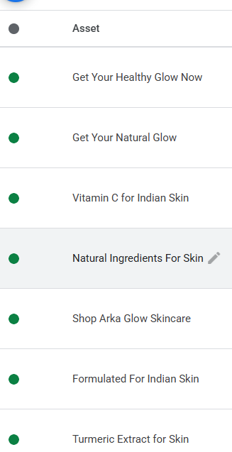
Descriptions
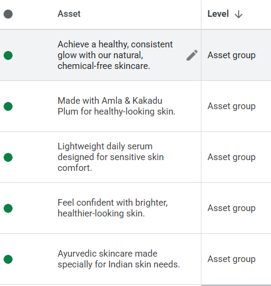
Search Ad Preview
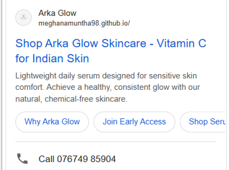
Display Ad Preview
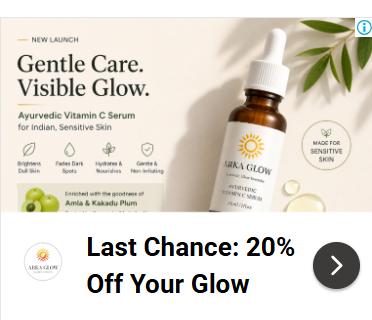
Campaign Performance
After launching the Google Performance Max campaign, I monitored its performance over an 8-day campaign period using Google Ads, Google Analytics 4 and Google Tag Manager. During this period, I analyzed key performance metrics such as impressions, clicks, click-through rate (CTR), average CPC and advertising spend to evaluate campaign delivery and audience engagement. In addition to traffic metrics, I tracked user interactions including CTA button clicks, scrolling behaviour and website engagement to better understand user activity and support campaign optimization.
After reviewing the campaign performance, I refined the campaign by adding negative keywords, reviewing search themes and monitoring user behaviour to improve targeting and campaign effectiveness.
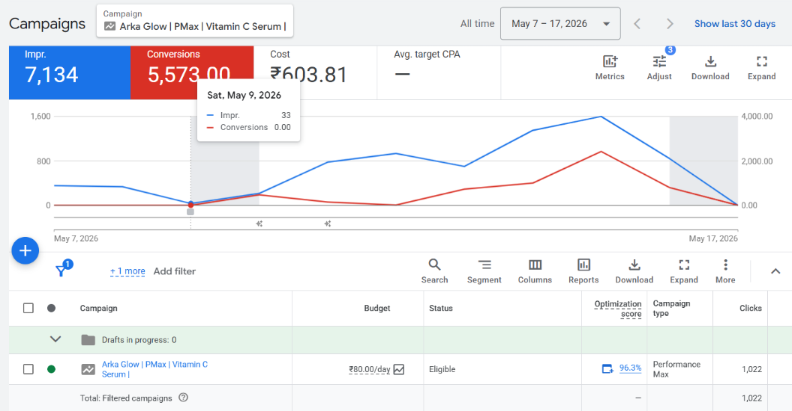
Performance Summary
Campaign Duration
8 Days
Campaign Type
Performance Max
Total Spend
₹697
Campaign Goal
Website Traffic
Tracking
Google Ads, GA4 & GTM
Primary Conversion
CTA Button Click
Audience Insights
Google Analytics 4 was used to analyze audience demographics and interests throughout the 8-day campaign. These reports provided insights into the types of users who visited the landing page, their engagement levels, and the audience segments reached by the Performance Max campaign.
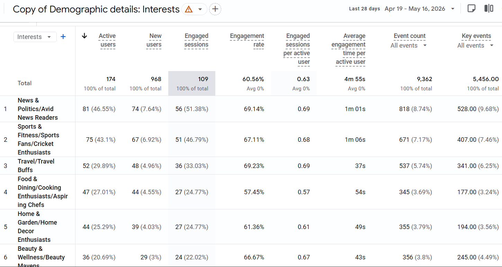
Interest Categories
Google Analytics identified multiple audience interest groups including Beauty & Wellness, Sports & Fitness, Travel, and Food & Dining.
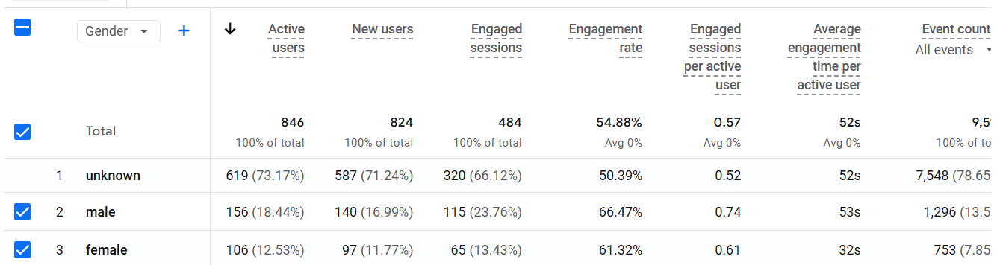
Gender Demographics
Audience demographics showed a mix of male, female and unknown users, providing additional insight into visitor characteristics.
Key Insights
Interest Segments
Visitors belonged to diverse interest categories including Beauty & Wellness, Sports & Fitness, Travel, and Food & Dining, demonstrating broad audience reach.
Audience Engagement
Engagement metrics showed users actively interacted with the landing page, indicating that the campaign successfully attracted relevant traffic.
Demographic Analysis
Gender reports included male, female and unknown visitors. The large unknown segment reflects a common limitation of GA4 demographic reporting.
Key Learning
GA4 audience reports provided valuable insights beyond clicks and impressions, helping evaluate visitor behavior and campaign reach.
Campaign Analysis & Optimization
After monitoring the campaign for eight days, I reviewed Google Ads and Google Analytics 4 reports to evaluate campaign performance and user behaviour. I analyzed search terms, engagement metrics and CTA interactions to identify optimization opportunities. Based on these insights, I refined the campaign by adding negative keywords and reviewing search themes to improve traffic quality and campaign relevance.
What Worked Well
Generated over 7,100 impressions during the campaign while maintaining a 14.33% CTR, indicating relevant messaging and creative assets.
Successfully implemented Google Analytics 4 and Google Tag Manager to monitor campaign performance and user engagement.
Campaign Analysis
Reviewed the Search Terms report to understand which user queries triggered the ads and evaluate their relevance.
Monitored impressions, clicks, CTR, CPC and engagement metrics before making optimization decisions.
Optimization Actions
Added negative keywords to reduce irrelevant traffic.
Reviewed search themes and continued monitoring campaign performance to improve campaign quality and targeting.
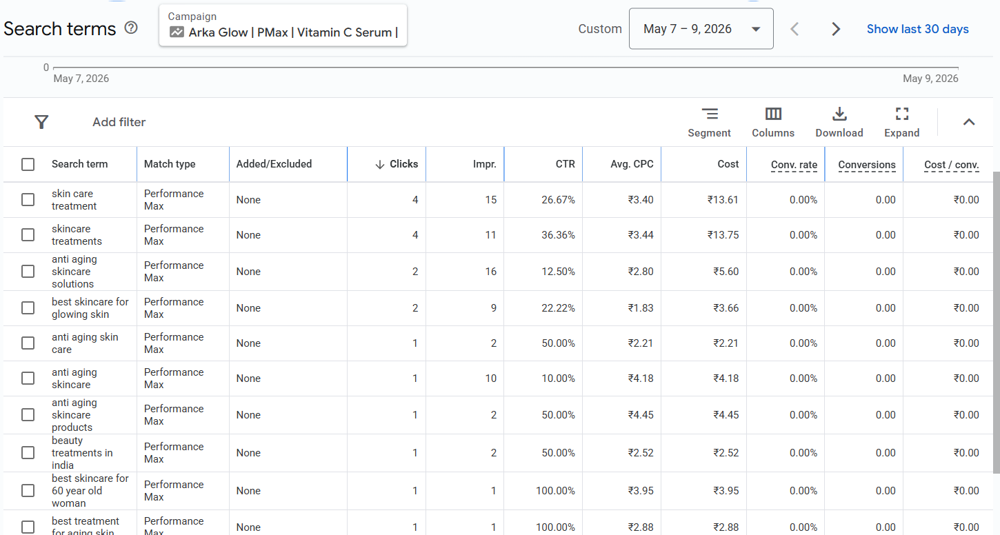
Figure: Google Ads Search Terms report used to evaluate search queries, review campaign performance and identify optimization opportunities.
Key Takeaway
This optimization process demonstrated that launching a campaign is only the first step. Regularly reviewing performance data, search terms and user behaviour helped me understand how ongoing optimization improves campaign effectiveness and traffic quality.
Key Learnings
Running a live Google Performance Max campaign provided practical experience beyond theory. It helped me understand how campaign planning, creative assets, audience targeting, analytics and continuous optimization work together to improve overall marketing performance.
📈 Google Performance Max
Planned, launched and monitored a live Google Performance Max campaign using my own advertising budget while gaining practical experience with Google's AI-driven campaign optimization.
🎨 Creative Asset Strategy
Created responsive headlines, descriptions and image creatives designed for automated combinations across Google's advertising channels.
📊 Audience & Analytics
Used Google Analytics 4 and Google Tag Manager to measure audience behaviour, CTA button clicks, engagement metrics and demographic insights.
⚙️ Campaign Optimization
Reviewed Search Terms reports, analyzed campaign performance, added negative keywords and learned the importance of continuous optimization using real campaign data.
Overall Reflection
This project strengthened my practical understanding of Google Ads by allowing me to independently plan, launch, monitor and optimize a live Performance Max campaign while integrating Google Analytics 4 and Google Tag Manager into the campaign workflow.
Google Tag Manager
To accurately measure user interactions, I implemented Google Tag Manager (GTM) on the Arka Glow landing page. GTM allowed me to deploy and manage Google Analytics tracking without directly editing the website code. I configured tags, triggers and event tracking to capture meaningful user actions throughout the campaign.
Platform
Google Tag Manager
Purpose
Website Tracking
Integrated With
Google Analytics 4
Custom Event
CTA Button Click
Implementation Highlights
- ✅ Configured Google Tag for website tracking.
- ✅ Connected Google Analytics 4 using GTM.
- ✅ Created a custom GA4 Event for CTA button clicks.
- ✅ Configured Initialization trigger for all pages.
- ✅ Used a custom trigger to track "Join Early Access" button clicks.
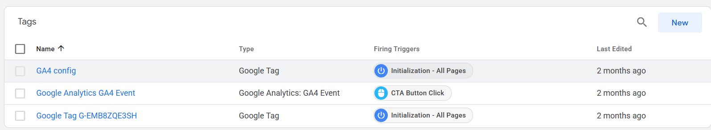
Configured Tags
Google Tag Manager configured with Google Tag, GA4 Configuration and custom GA4 Event tracking.
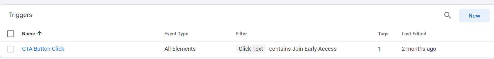
CTA Click Trigger
Custom trigger created to capture users clicking the "Join Early Access" CTA button.